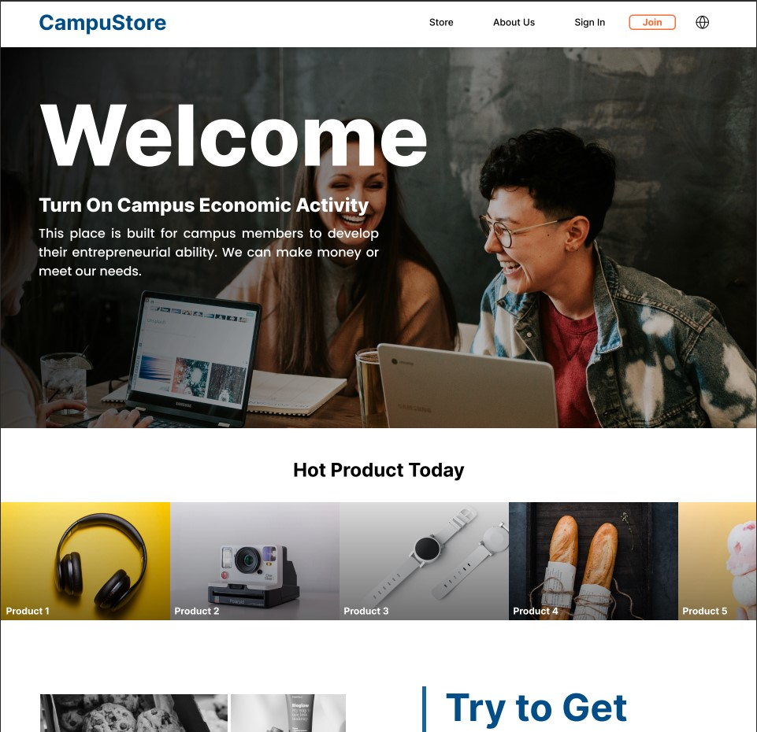
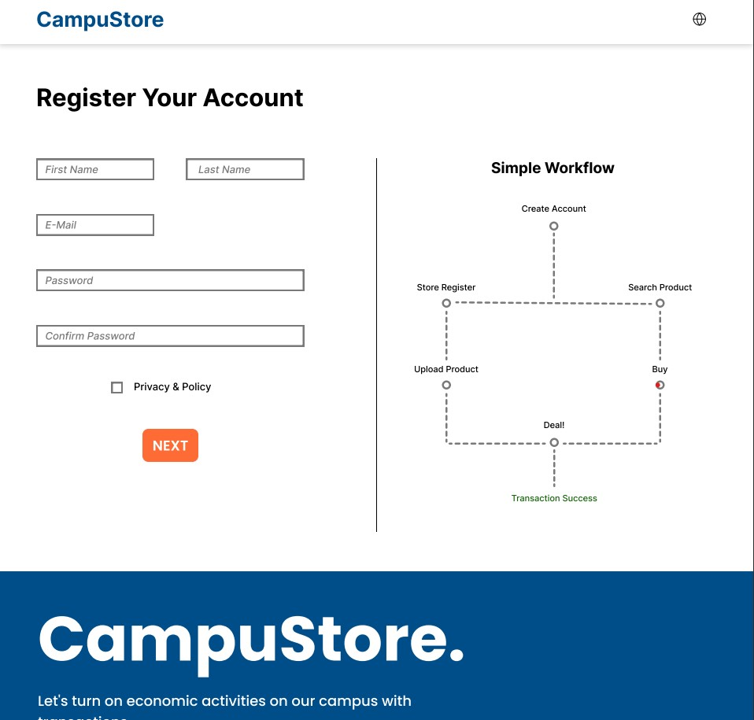
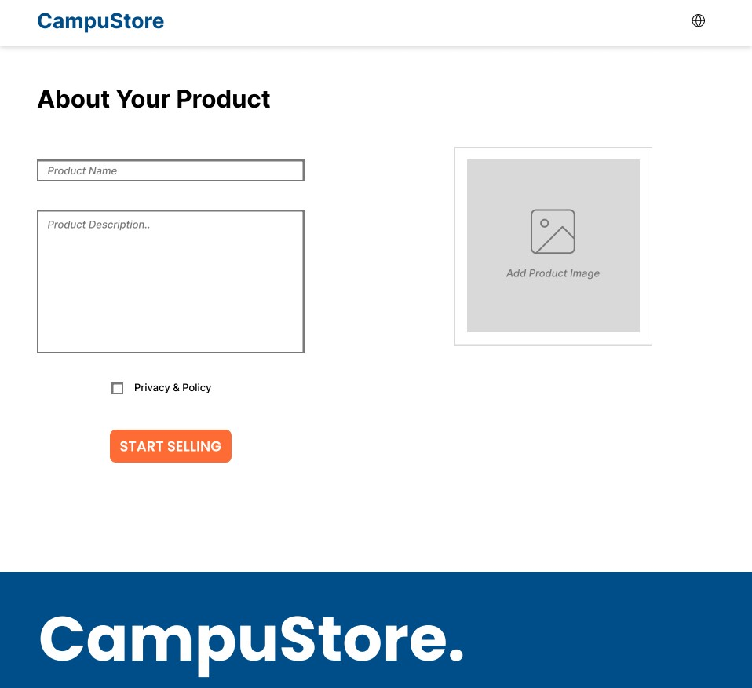
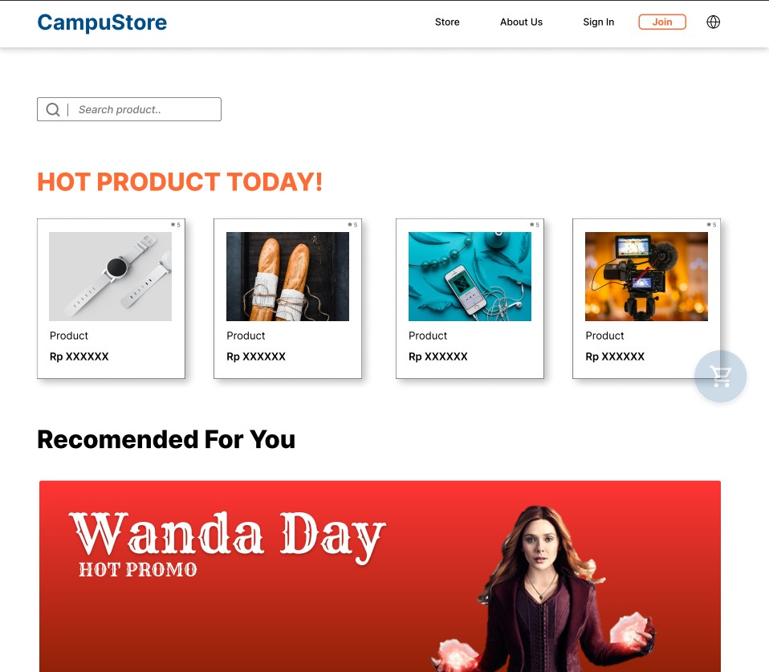
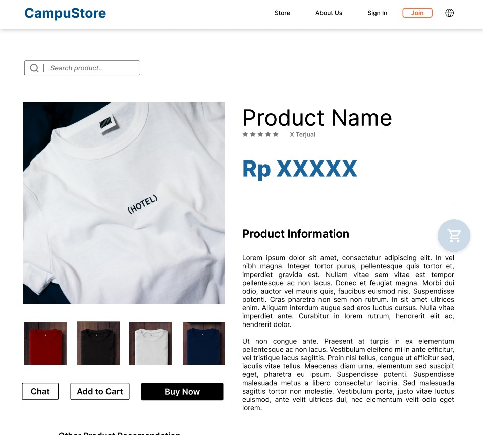
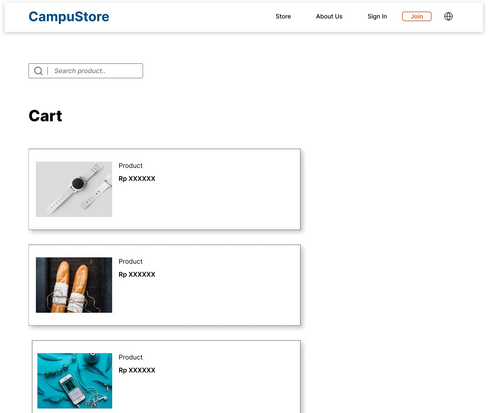

Desain UI/UX
Sebelum mulai melakukan pengkodean suatu website maupun aplikasi, alngkah baiknya untuk membuat desain wireframe hingga prototype terlebih dahulu. Desain UI (User Interface) adalah tampilan yang terlihat secara langsung oleh user. Dan desain UX (User Experience) lebih berfokus pada pengalaman yang akan dirasakan oleh user, seperti langkah dan logic dari jalannya suatu program.
Adapun beberapa tahap untuk membuat desain wireframe hingga prototype suatu website atau aplikasi.
- Sebagaimana pada pembuatan suatu karya yang lainnya, sangat perlu untuk melakukan riset guna mendapatkan referensi desain dari website/aplikasi yang akan dibuat
- Buat sketsa atau storyboard dari penggunaan website/aplkasi serta UI/UX di kertas maupun digital
- Gunakan software yang memiliki fungsi khusus dalam pembuatan desain website/aplikasi hingga pembuatan prototype seperti Adobe InDesign, Figma, dan lain sebagainya. Pada percobaan kali ini saya mengggunakan Figma
- Langkah pertama yang perlu dilakukan adalah membuat frame kosong sesuai dengan ukuran website/aplikasi yang diinginkan.
- Manfaatkan Shape Tool dan Text Tool untuk membuat desain wireframe
- Duplikat frame sesuai kebutuhan untuk membuat beberapa halaman yang diperlukan
- Beri warna dan efek pada objek, teks, maupun gambar untuk memaksimalkan konsep desain.
- Manfaatkan prototype sehingga program website/aplikasi dapat berjalan sesuai dengan konsep yang diinginkan
Berikut merupakan hasil dari percobaan pembuat Digital Poster yang telah saya lakukan.
     Software in Use: Figma
Sekilas Tentang Software
Figma
by Figma, Inc
Figma merupakan aplikasi web yang memiliki fungsi utama untuk membuat desain interface. Software ini dapat diakses secara online di web maupun secara offline menggunakan aplikasi. Selain itu, figma memiliki fitur kolaborasi dimana user dapat membuat suatu project secara bersamaan.
Magic Shortcut
| Keys | Function |
|---|---|
| F | Frame |
| B | Paint bucket |
| Alt + / | Remove fill |
| Shift + 1 | Zoom to fit |
| Shift + 2 | Zoom to selection |
| Ctrl + B | Bold |
| Shift + R | Rulers |
| Ctrl + O | Open file |
| P | Pentool |
| Ctrl + Z | Undo |